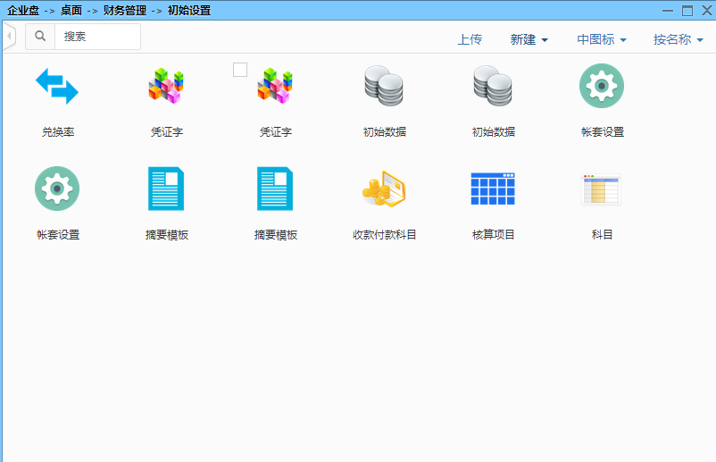
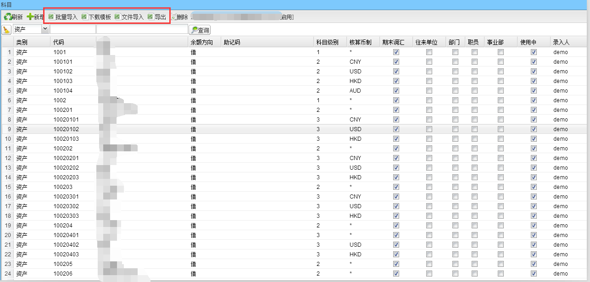

1.下图是初始设置页面;

2.在此界面设置兑换率、初始数据、帐套设置、收款付款科目、核算项目、科目；
科目设置：可单个新增，也可下载Excel模板批量导入，设置科目时尽量保留原有的一级科目代码，如果修改或新增了一级科目必须要修改后面报表中的一级科目代码。
核算项目：一般将同一客户的代码在操作系统中与财务软件中的核算代码相同便于查找。
收付款科目：设置操作系统中的现金及银行等，在财务软件核算时的科目代码。
;
兑换率：兑换率是财务软件系统核算的兑换率。
初始数据：是指启用财务账套时必须输入上一期间的各币制和各个科目的余额
点击科目进入界面：

查看科目可实现Excle批量导入功能，先下载模板，编辑好后再导入。